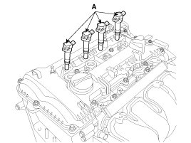
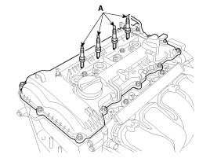
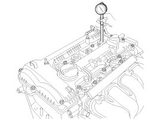

Compression Check: Testing and Inspection
Compression Pressure Inspection
NOTE:
If the there is lack of power, excessive oil consumption or poor fuel economy, measure the compression pressure.
1. Warm up and stop engine.
Allow the engine to warm up to normal operating temperature.
2. Disconnect the injector connectors (A).

3. Disconnect the ignition coil connectors (A).

4. Remove ignition coils (A).

5. Remove spark plugs (A).
Using a 16mm plug wrench, remove the 4 spark plugs.

6. Check cylinder compression pressure.
(1) Insert a compression gauge into the spark plug hole.

(2) Fully open the throttle.
(3) While cranking the engine, measure the compression pressure.
NOTE:
Always use a fully charged battery to obtain engine speed of 200 rpm or more.
(4) Repeat steps (1) through (3) for each cylinder.
NOTE:
This measurement must be done in as short a time as possible.
Compression pressure:
1,275 kPa (13.0 kgf/cm2, 185 psi)
Minimum pressure:
1,128 kPa (11.5 kgf/cm2, 164 psi)
Difference between each cylinder:
100 kPa (1.0 kgf/cm2, 15 psi) or less
(5) If the cylinder compression in 1 or more cylinders is low, pour a small amount of engine oil into the cylinder through the spark plug hole and repeat steps (1) through (3) for cylinders with low compression.
A. If adding oil helps the compression, it is likely that the piston rings and/or cylinder bore are worn or damaged.
B. If pressure stays low, a valve may be sticking or seating is improper, or there may be leakage past the gasket.
7. Reinstall spark plugs.
Tightening torque:
14.7 - 24.5 N.m (1.5 - 2.5 kgf.m, 10.8 - 18.1 lb-ft)
8. Install ignition coils.
Tightening torque:
9.8 - 11.8 N.m (1.0 - 1.2 kgf.m, 7.2 - 8.7 lb-ft)
9. Connect the injector connectors and ignition coil connectors.
10. Some DTCs may exist after the inspection test and may need to be manually cleared with GDS.